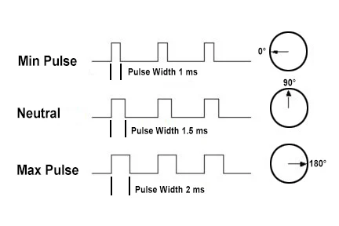
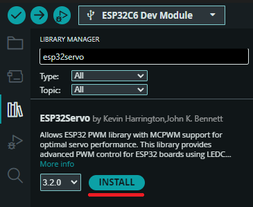

Serwomechanizmy (PWM w praktyce)
W dziale o sygnałach analogowych nauczyłeś się regulować jasność diody LED za pomocą sygnału PWM (Pulse Width Modulation). W tym rozdziale wykorzystamy ten sam sygnał w zupełnie innym celu – do precyzyjnego sterowania pozycją i ruchem elementów mechanicznych za pomocą serwomechanizmu.
Serwa modelarskie są powszechnie stosowane w robotyce (ramiona robotów, sterowanie kołami) oraz modelarstwie (sterowanie sterami w samolotach i łodziach).
⚙️ Jak działa serwomechanizm?
Standardowe serwo modelarskie (takie jak popularne mikro-serwo SG90 w wersji 180°) nie obraca się bez końca jak zwykły silnik DC. Zamiast tego potrafi obrócić swój wał o określony kąt – najczęściej w zakresie od 0° do 180° (choć możesz się spotkać z serwami o zakresie 270°, a także serwami pracującymi w trybie ciągłym, które obracają się w nieskończoność) – i utrzymać zadaną pozycję pod obciążeniem.
Wewnątrz obudowy serwa kryje się mały silnik prądu stałego, przekładnia zębata, potencjometr (który mierzy aktualny kąt obrotu wału) oraz układ sterujący (komparator).
Kodowanie szerokością impulsu (PWM 50 Hz)
Sterowanie serwem odbywa się poprzez wysyłanie na przewód sygnałowy impulsu PWM o częstotliwości 50 Hz (co odpowiada okresowi powtarzania sygnału wynoszącemu dokładnie 20 ms).
O pozycji wału decyduje czas trwania stanu wysokiego (szerokość impulsu) w każdym okresie:
- Impuls ok. 1,0 ms (1000 µs) ustawia wał w pozycji skrajnej lewej (0°).
- Impuls ok. 1,5 ms (1500 µs) ustawia wał w pozycji środkowej (90°).
- Impuls ok. 2,0 ms (2000 µs) ustawia wał w pozycji skrajnej prawej (180°).

Rzeczywisty zakres impulsów dla tanich serw
Teoretyczny standard czasów impulsów (1,0 ms – 2,0 ms) w przypadku tanich serw (np. SG90) w rzeczywistości często odbiega od normy i wynosi od ok. 0,5 ms (500 µs) do 2,4 ms (2400 µs). Próba ustawienia kąta poza mechaniczne ograniczenia serwa (gdy silnik próbuje się przekręcić, ale blokuje go fizyczna zębatka) spowoduje głośne brzęczenie, pobór prądu rzędu kilkuset miliamperów, silne nagrzewanie i w konsekwencji szybkie uszkodzenie silnika. Zawsze dobieraj zakres bezpieczny dla konkretnego egzemplarza!
🔌 Podłączenie elektryczne i BHP serwa
Większość serw modelarskich wyprowadza trzy przewody w standardowych kolorach:
- Brązowy (lub czarny): Masa (GND) – łączymy z pinem
GNDmikrokontrolera. - Czerwony: Zasilanie (VCC) – łączymy z pinem
5V(VBUS/USB). - Pomarańczowy (lub żółty): Sygnał sterujący – łączymy z dowolnym wolnym GPIO (np.
GPIO2).
Zasilanie i prąd rozruchowy serwomechanizmów
Silnik serwa w momencie startu lub pracy pod obciążeniem potrafi pobrać prąd o natężeniu od 500 mA do nawet ponad 1 A.
- Nigdy nie zasilaj serwa z pinu
3.3VESP32 – grozi to natychmiastowym przeciążeniem stabilizatora napięcia na płytce i restartem mikrokontrolera. - Zawsze podłączaj przewód czerwony do pinu
5V(który jest bezpośrednio połączony z zasilaniem USB). - Przy sterowaniu większą liczbą serw (dwoma lub więcej) konieczne jest zastosowanie zewnętrznego zasilacza 5V (np. ładowarki USB), pamiętając o wspólnym połączeniu mas (GND) zewnętrznego zasilacza i mikrokontrolera.
💻 Sterowanie serwem w ESP32
Zanim zaczniemy używać gotowych narzędzi, zobaczmy, jak możemy wysterować serwomechanizm na najniższym poziomie za pomocą podstawowych instrukcji sterowania pinami.
🎯 Ćwiczenie 1: Ręczne generowanie sygnału (Soft-PWM)
Aby serwo mogło przemieścić się i utrzymać w danej pozycji, musimy wysyłać impulsy sterujące nieprzerwanie (co \(20\text{ ms}\)). Pojedynczy impuls to za mało, aby silnik zdążył fizycznie obrócić wał.
Napiszmy program, który co około 1 sekundę zmienia pozycję ramienia serwa między \(0^\circ\) (impuls \(1\text{ ms}\)) a \(180^\circ\) (impuls \(2\text{ ms}\)). Generujemy serię 50 impulsów dla każdej pozycji (\(50 \times 20\text{ ms} = 1000\text{ ms}\)):
const int PIN_SERWA = 2;
void setup() {
pinMode(PIN_SERWA, OUTPUT);
}
void loop() {
// 1. Ustawienie w pozycji 0 stopni (impuls 1000 µs) przez ok. 1 sekundę
for (int i = 0; i < 50; i++) {
digitalWrite(PIN_SERWA, HIGH);
delayMicroseconds(1000);
digitalWrite(PIN_SERWA, LOW);
delayMicroseconds(19000); // 20000 µs - 1000 µs = 19000 µs
}
// 2. Ustawienie w pozycji 180 stopni (impuls 2000 µs) przez ok. 1 sekundę
for (int i = 0; i < 50; i++) {
digitalWrite(PIN_SERWA, HIGH);
delayMicroseconds(2000);
digitalWrite(PIN_SERWA, LOW);
delayMicroseconds(18000); // 20000 µs - 2000 µs = 18000 µs
}
}
🧠 Dlaczego warto używać bibliotek?
Powyższa metoda (ręczne sterowanie z opóźnieniami) ma ogromną wadę: całkowicie blokuje procesor na czas wykonywania opóźnień (tzw. busy waiting).
Jeśli w pętli loop() spróbujesz dopisać kod odczytujący czujniki, przyciski lub nawiązujący połączenie Wi-Fi, czas trwania pętli wydłuży się i zaburzy precyzyjny odstęp \(20\text{ ms}\) oraz czas trwania samego impulsu. Serwo zacznie drżeć, szarpać lub całkowicie przestanie reagować.
Aby tego uniknąć, w środowisku Arduino stosujemy dedykowane biblioteki, które sprzętowo konfigurują wbudowane w ESP32 timery. Generują one odpowiedni sygnał w tle (asynchronicznie i sprzętowo), nie obciążając w żaden sposób procesora.
📚 Instalacja biblioteki ESP32Servo
Dla mikrokontrolerów ESP32 standardowa biblioteka <Servo.h> (stworzona z myślą o platformie AVR/Arduino Uno) nie zadziała. Użyjemy dedykowanej biblioteki ESP32Servo.
Instalacja w Arduino IDE:
- Kliknij ikonę Library Manager (trzy książki) w lewym panelu bocznym.
- W polu wyszukiwania wpisz ESP32Servo (autor: Kevin Harrington, John K. Bennett).
- Kliknij przycisk Install.

🎯 Ćwiczenie 2: Cykliczny obrót (Sweep) z biblioteką
Dzięki bibliotece ESP32Servo kod sterujący jest znacznie prostszy, a ruch serwa – płynny:
#include <ESP32Servo.h>
// Tworzymy obiekt reprezentujący nasze serwo
Servo moje_serwo;
// Deklarujemy pin sterujący
const int PIN_SERWA = 2;
void setup() {
// Przypisujemy pin do serwa oraz definiujemy zakres szerokości impulsów
// dla standardowych mikroserw (SG90) to zazwyczaj 500 do 2400 mikrosekund
moje_serwo.attach(PIN_SERWA, 500, 2400);
}
void loop() {
// Płynny ruch od 0 do 180 stopni:
for (int kat = 0; kat <= 180; kat += 1) {
moje_serwo.write(kat); // Ustawiamy serwo na zadany kąt
delay(15); // Czekamy chwilę, aby serwo zdążyło się obrócić
}
// Ruch z powrotem od 180 do 0 stopni:
for (int kat = 180; kat >= 0; kat -= 1) {
moje_serwo.write(kat);
delay(15);
}
}
Ciekawostka: Co się dzieje pod maską?
Biblioteka ESP32Servo konfiguruje sprzętowy generator PWM (LEDC) wbudowany w ESP32. Generuje on sygnał całkowicie sprzętowo i asynchronicznie w tle – oznacza to, że raz ustawiony kąt za pomocą moje_serwo.write() będzie stale utrzymywany na pinie przez hardware, a pętla loop() pozostaje wolna na inne obliczenia!
🛠️ Zadanie: Sterowanie pozycją serwa za pomocą potencjometru
Napisz program, który odczytuje wartość analogową z potencjometru i na tej podstawie płynnie ustawia kąt wychylenia wału serwomechanizmu.
Wymagania:
- Podłącz potencjometr do pinu analogowego (np.
GPIO0- ADC1). - Odczytaj wartość napięcia (zakres ADC w ESP32-C6 to domyślnie 12 bitów, czyli wartości od
0do4095). - Przeskaluj odczytaną wartość na zakres kątów pracy serwa (
0do180) za pomocą funkcjimap(). - Wyślij zmienioną wartość kąta do serwa za pomocą biblioteki
ESP32Servo. - Dodaj małe opóźnienie w pętli
loop(), aby ustabilizować odczyty i ruch silnika.
Pokaż rozwiązanie
#include <ESP32Servo.h>
Servo moje_serwo;
const int PIN_POTENCJOMETRU = 0; // GPIO0 (ADC)
const int PIN_SERWA = 2; // GPIO2 (PWM)
void setup() {
moje_serwo.attach(PIN_SERWA, 500, 2400);
pinMode(PIN_POTENCJOMETRU, INPUT);
}
void loop() {
// Odczyt z potencjometru (0 - 4095)
int wartosc_adc = analogRead(PIN_POTENCJOMETRU);
// Zmapowanie zakresu ADC na kąt obrotu serwa (0 - 180)
int kat = map(wartosc_adc, 0, 4095, 0, 180);
// Ustawienie pozycji serwa
moje_serwo.write(kat);
// Krótkie opóźnienie na ustabilizowanie pozycji serwa i przetwornika ADC
delay(20);
}